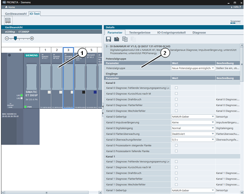
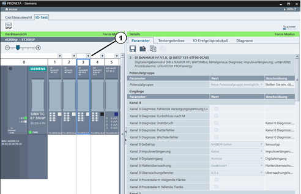
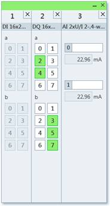
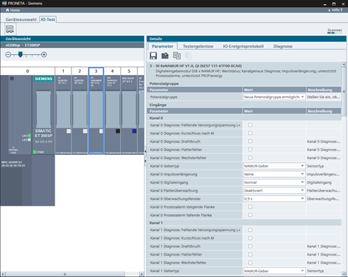
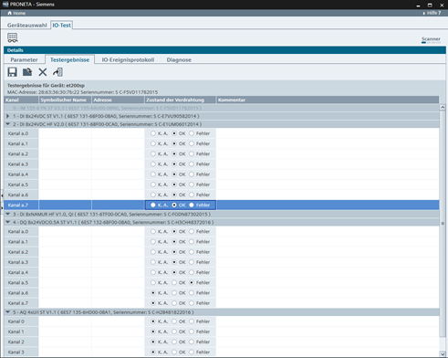
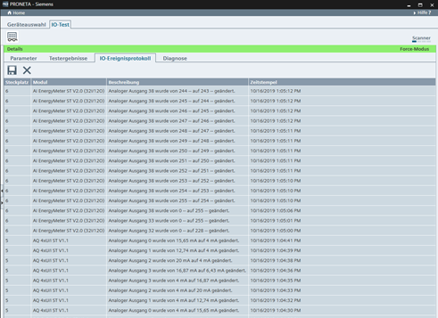
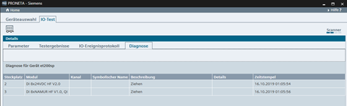

Symbol
Name
Funktion

Werte forcen und überwachen
Aktiviert und deaktiviert die Steuerung des Gerätes über PRONETA Basic für den IO-Test.
Der IO-Test dient zur Überprüfung der Verdrahtung eines dezentralen Peripheriegerätes noch vor der Installation einer CPU sowie zur schnellen, fehlerfreien und einfachen Protokollierung der Testergebnisse.
Im IO-Testmodus besteht der Bildschirm aus zwei Hauptansichten:
„Geräteansicht” (1), eine grafische Darstellung des getesteten Gerätes
Die „Details”-Tabelle (2), in der Zusatzinformationen zu dem getesteten Gerät und zum Test im Allgemeinen angezeigt werden.

Funktionsleiste
Über die Funktionsleiste steht folgende Funktion zur Verfügung:
|
Symbol |
Name |
Funktion |
|
|
Werte forcen und überwachen |
Aktiviert und deaktiviert die Steuerung des Gerätes über PRONETA Basic für den IO-Test. |
|
ACHTUNG |
Wenn ein IO-Test mit PRONETA Basic für ein Gerät ausgeführt wurde, werden die F-Zieladressen der zugehörigen F-I/O-Module gelöscht und die Module gehen in einen sicheren Zustand über. Weisen Sie den betroffenen Modulen die F-Zieladressen mit dem jeweiligen Engineering-Tool neu zu. |
|
HINWEIS |
Zur Durchführung des IO-Tests stellt PRONETA Basic eine PROFINET-AR (Application Relation) zum Zielgerät her. Stellen Sie sicher, dass diese Verbindung von keinem anderen PROFINET-Controller belegt wird. |
Der Zustand des IO-Tests wird durch die Farbe der Kopfleisten in den Ansichten „Geräteansicht“ und „Details“ angezeigt:
Hellgrün zeigt an, dass der IO-Test aktiv ist. Zusätzlich erscheinen die Worte „Force-Modus“ rechts in der Kopfleiste.
Dunkles Petrol zeigt an, dass der IO-Test inaktiv ist.
Verwendung
In der Geräteansicht wird das Gerät symbolisch dargestellt, das für den IO-Testmodus ausgewählt wurde. Die Status- sowie die Eingangs- und Ausgangs-LEDs werden in Echtzeit aktualisiert, um den Zustand des realen Gerätes widerzuspiegeln.

Um eine größere Ansicht für eines beliebiges Modul zu erhalten, klicken Sie auf das „+“-Symbol (1) über dem Modul. Ein kleines Popup-Fenster wird eingeblendet.
Durch Klicken auf eines der Module hier wird die Parametertabelle des jeweiligen Moduls in der „Details”-Ansicht angezeigt oder – je nach ausgewählter Registerkarte – der entsprechende Abschnitt hervorgehoben.
Module, deren Diagnosepuffer Informationen enthält, werden mit einer roten Kopfzeile angezeigt.
Digitale Ein- und Ausgänge
Klicken Sie auf ein beliebiges LED-Symbol eines Ausgangsmoduls, um den Status des entsprechenden Ausgangs umzuschalten. Ebenso wird durch das Anlegen einer Spannung an einen beliebigen Eingang die LED des entsprechenden Eingangsmoduls aufleuchten.
Digitale Ausgänge können ebenfalls über die Registerkarte „Testergebnisse“ in der Detailansicht geforcet werden..
Analoge Ein- und Ausgänge
Analogwerte von Ein- und Ausgangsmodulen werden auf die gleiche Weise gelesen.
Um Analogwerte zu forcen, verwenden Sie entweder das Popup-Fenster oder die Registerkarte „Testergebnisse” in der Detailansicht.
|
HINWEIS |
Optional steckbare Anschlussklemmen (3DI/LC-Module) der Motorstarter werden nur angezeigt, nachdem der Force-Modus aktiviert wurde. |
Verwendung
Über jedem Modul in der Geräteansicht kann mit Hilfe des „+“-Symbols ein Popup-Fenster mit einer größeren symbolischen Darstellung der Ein- und Ausgänge des Moduls geöffnet werden. Werden mehrere Module geöffnet, so werden deren Popup-Fenster in einer Reihe innerhalb eines einzigen Fensters angeordnet.

Klicken Sie auf das „Schließen“-Symbol („´“) oben rechts im Popup-Fenster oder auf das „-“-Symbol oberhalb des Moduls in der Geräteansicht, um das Popup-Fenster für das jeweilige Modul wieder zu schließen. Um das gesamte Fenster zu schließen, klicken Sie auf das „Schließen“-Symbol („´“) oben rechts im Fenster. Um die Module innerhalb des Popup-Fensters neu anzuordnen, klicken Sie auf die Tabellenüberschrift des besagten Moduls und ziehen Sie es an die gewünschte Position.
Digitale Ein- und Ausgänge
Es ist möglich, digitale Ein- und Ausgänge jeweils zu überwachen und zu forcen, indem die ihren Verbindungen entsprechenden Felder angezeigt bzw. diese aktiviert oder deaktiviert werden. Aktive Leitungen werden grün angezeigt.
Analoge Ein- und Ausgänge
Für analoge Module können in den Feldern neben den angezeigten Kanalnummern symbolische Kanalnamen eingegeben werden. Diese werden dann automatisch in das Prüfprotokoll kopiert.
Das Forcen analoger Ausgangswerte ist entweder durch Eingabe des numerischen Werts in das entsprechende Feld oder durch Ziehen des Schiebereglers möglich. Durch Klicken auf das Symbol neben dem Feld wird der Ausgang auf den Standardwert zurückgesetzt.
Die Detailtabelle besteht aus vier Registerkarten, die jeweils über eine eigene Funktionsleiste verfügen:
Parameter zum Einstellen der Modulparameter
Testergebnisse für die Durchführung und Protokollierung des Verdrahtungstests für die Anlage
I/O-Ereignisprotokoll für die Überwachung regelmäßiger Ereignisse wie z. B. Änderungen der Ein- und Ausgangswerte eines Moduls
Diagnose zum Protokollieren von Systemereignissen wie z. B. dem Ziehen und Stecken von Modulen
Diese Registerkarte gibt einen Überblick über den Parametersatz des in der Geräteansicht ausgewählten Moduls. Parameter können nur bearbeitet werden, solange die Option „Werte forcen und überwachen” nicht verwendet wird (siehe IO-Testmodus, Abschnitt „Funktionsleiste“).

Der Parametersatz kann in einer Datei auf einen PC gespeichert, aus einer Datei geladen sowie aus der Windows-Zwischenablage kopiert und eingefügt werden, um die Parameter auf ein anderes Modul zu übertragen.
Funktionsleiste
Über die Funktionsleiste stehen folgende Funktionen zur Verfügung:
|
Symbol |
Name |
Funktion |
|
|
Parameter speichern |
Speichert den aktuellen Parametersatz des gesamten Gerätes auf einem Laufwerk. |
|
|
Parameter laden |
Lädt einen zuvor gespeicherten Parametersatz von einem PC und weist ihn dem aktuellen Gerät zu. |
|
|
Parameter kopieren |
Kopiert den Parametersatz des aktuell ausgewählten Moduls in die Zwischenablage von Windows. |
|
|
Parameter einfügen |
Ein zuvor kopierter Modul-Parametersatz wird aus der Windows-Zwischenablage in das aktuell ausgewählte Gerät eingefügt. Wenn der Parametersatz in der Zwischenablage nicht zum ausgewählten Modul passt, wird das Symbol grau dargestellt. |
Anhand der Befehle „Parameter speichern“ und „Parameter laden“ können Parametersätze zwischen den Geräten übertragen und mehrere identische Geräte konfiguriert werden. Im Gegensatz hierzu werden die Befehle „Parameter kopieren“ und „Parameter einfügen“ hauptsächlich verwendet, um Modulkonfigurationen innerhalb eines Gerätes zu „klonen“.
Diese Registerkarte bietet die Funktionalität für den eigentlichen IO-Test des aktuell ausgewählten Gerätes.

Die Prüftabelle ist vertikal in Abschnitte nach den vorhandenen I/O-Modulen unterteilt. Jeder Abschnitt kann durch Klicken auf das Dreieckssymbol „►“ in der Kopfzeile des Abschnitts zugeklappt und wieder aufgeklappt werden.
Die Prüftabelle besteht aus den folgenden Spalten:
|
HINWEIS |
Die Werte für „Symbolischer Name“ und „Adresse” dienen nur als Gedächtnisstütze für den Prüfer. |
Der IO-Test kann durch Speichern und Laden des Protokolls angehalten und zu einem späteren Zeitpunkt fortgesetzt werden.
Nach Abschluss des Tests kann das Protokoll zur Dokumentation der ordnungsgemäßen Verdrahtung des Gerätes gespeichert werden. (Nähere Informationen hierzu finden Sie unter Funktionsleiste).
Über die Funktionsleiste stehen folgende Funktionen zur Verfügung:
|
Symbol |
Name |
Funktion |
|
|
Testergebnisse speichern |
Speichert die Ergebnisse des aktuellen IO-Tests auf der Festplatte (Format: CSV), entweder nach dem Abschluss oder aber nach einer Unterbrechung des Tests. |
|
|
Testergebnisse laden |
Lädt die Testergebnisse eines früheren IO-Tests von der Festplatte, um mit dem Testen fortzufahren. |
|
|
Testergebnisse zurücksetzen |
Verwirft die Ergebnisse des aktuellen Tests und ermöglicht es Ihnen, wieder von vorn zu beginnen. Sämtliche Ergebnisse werden aus PRONETA Basic gelöscht. |
|
Symbolische Namen aus einer AML-Datei importieren |
Importiert symbolische Namen für Geräte-I/Os aus einer AML-Datei (siehe Eine AML-Datei als Referenz verwenden.) |
Eine AML-Datei als Referenz verwenden
Eine AML-Datei kann verwendet werden, um symbolische Namen für I/Os bereitzustellen.
Die folgenden Merkmale des Geräts, das getestet werden soll, müssen mit dem Gerätenamen in der AML-Datei übereinstimmen:
Wenn dies der Fall ist und die AML-Datei symbolische Namen für die I/Os enthält, werden die Namen in der AML-Datei für die I/Os im getesteten Gerät verwendet und in Spalte „Symbolischer Name“ angezeigt.
Auf dieser Registerkarte werden alle regulären Ereignisse protokolliert (wie z. B. Veränderungen der Ein- und Ausgangswerte), die während des aktiven IO-Tests aufgetreten sind.
Durch Klicken auf eine Spaltenüberschrift wird die Tabelle entsprechend sortiert.

Funktionsleiste
Über die Funktionsleiste stehen folgende Funktionen zur Verfügung:
|
Symbol |
Name |
Funktion |
|
|
IO-Ereignisprotokoll speichern |
Speichert das Ereignisprotokoll auf einem PC (Format: CSV). |
|
|
IO-Ereignisprotokoll zurücksetzen |
Löscht alle Einträge aus dem aktuellen Ereignisprotokoll. |
Die Tabelle auf dieser Registerkarte zeigt ein Protokoll aller irregulären Ereignisse, die während des aktiven IO-Tests am Gerät aufgetreten sind, wie z. B. das Ziehen von Modulen oder den Bruch einer Signalleitung.
Enthält der Diagnosepuffer Ereignisse eines dazugehörigen Moduls, wird die Kopfzeile des entsprechenden Moduls in der Gerätetabelle rot dargestellt.
Durch Klicken auf eine Spaltenüberschrift der Tabelle wird die Tabelle entsprechend sortiert.
Durch Auswählen eines Tabelleneintrags wird das entsprechende Modul in der Geräteansicht hervorgehoben. Durch Auswählen eines Moduls in der Geräteansicht andererseits wird der erste Eintrag zu dem Modul in dieser Tabelle hervorgehoben.

Die Tabelle besteht aus den folgenden Spalten:
„Steckplatz”
„Modul”
„Kanal”
„Symbolischer Name” (wie auf der Registerkarte „Testergebnisse“ eingegeben)
„Beschreibung”
„Details”
„Zeitstempel”